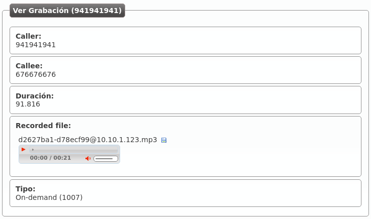

Call recording¶
Attention
Beware that local legislation may enforce to announce that the call is being recorded (sometimes to both parties). You should include a recording disclaimer in your welcome locutions for DDIs with automatic recording enabled.
IvozProvider supports two different ways of recording calls:
- Automatic recordings for the incoming/outgoing calls that use a External DDI.
- On demand recordings requested by a user during a call.
Automatic DDI recordings¶
In this type of recording, the whole conversation will be recorded: from the start until it finishes.
Two different scenarios:
- Incoming calls to a DDI: The call will continue until the external dialer hangups (no matter whom is talking to).
- Outgoing calls using a DDI as Outgoing DDI: the recording will continue as long as the external destination keeps in the conversation.
Attention
Take into account that the call will be recorded while the external entity is present, even it the call is being transfered between multiple users of the platform.
Record all the calls of a DDI
To enable this feature, edit the DDI and configure the field under the section recording data:

There are 4 available options:
- Disable recordings
- Enable incoming recordings
- Enable outgoing recordings
- Enable all call recordings
On demand recordings¶
The on-demand recordings must be enabled by the brand administator for the companies that request it. This can be done in the companey edit screen:

Warning
Contrary to the Services mentioned in the previous section, the on demand record are actived within a conversation.
Contrary to automatic ones, on demand recording can be stoped using the same process that started them.
Activated using the Record key¶
Some terminals (for example, Yealink) support sending a SIP INFO message during the conversation with a special Record header (see reference). This is not a standard for the protocol, but being Yealink one of the supported manufacturers of the solution, we include this kind of on-demand recording.
Important
For this recording requests, the configured code doesn’t matter but the company still must have on demand records enabled.
To start or stop this kind of recordings, just press the Record key in the terminal and the system will handle the sent message.
Activated using DTMF codes¶
The more traditional approach for this feature is to press a combination of keys during the call. Some notification will be played and the recording will start or stop. This combination is sent to the system using DTMF tones using the same audio stream that the conversation (as mentioned in RFC 4733).
IvozProvider supports this kind of on demand record activation but with an important downside. In order to capture this codes, the pbx must process each audio packet to detect the code, avoiding the direct flow of media between the final endpoints.
Important
Enabling this record mode highly affects the performance of the platform. Use at your own risk.
Activated using a frustated blind transfer¶
There is a tricky way to access this feature for terminals that does not support the INFO message and don’t want its audio to be parsed:
Danger
This method is a workaround for those terminals that does not support the native Record key activation (recommended). Take into account that not all terminals will behave the same way while performing the transfer described in this section.
The keys for this methods are:
- It’s not activated using a code during the conversation.
- It’s activated making a blind transfer to the on demand record code.
- The system will understand this as a request to record and will reject the transfer.
- The user will continue with the existing call and keep talking.
Why this method does even exist?
The reason behind this tricky method is based, as explained in the previous block, on the design of the Platform general architecture and the RTP audio flow.
Recordings list¶
The company administrator can access to all the recordings in the section Company configuration > Recordings:

Recordings can be heard from the web or downloaded in MP3 format:

If the recording has been started on demand, it will also include the user that requested it:
